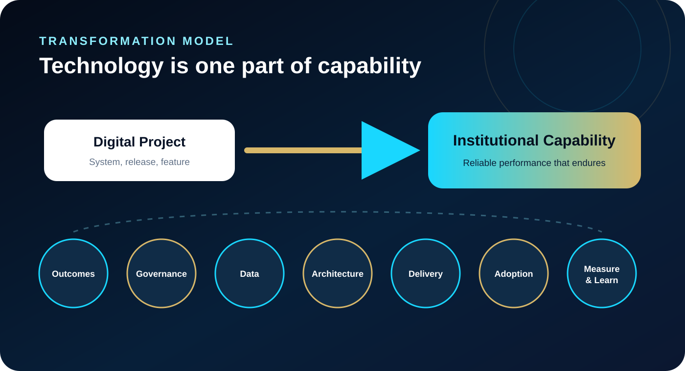
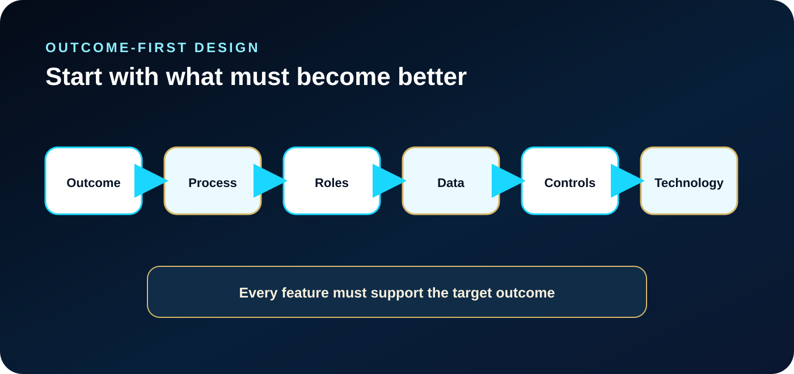
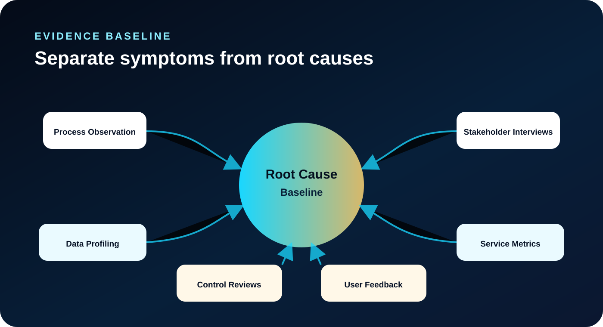
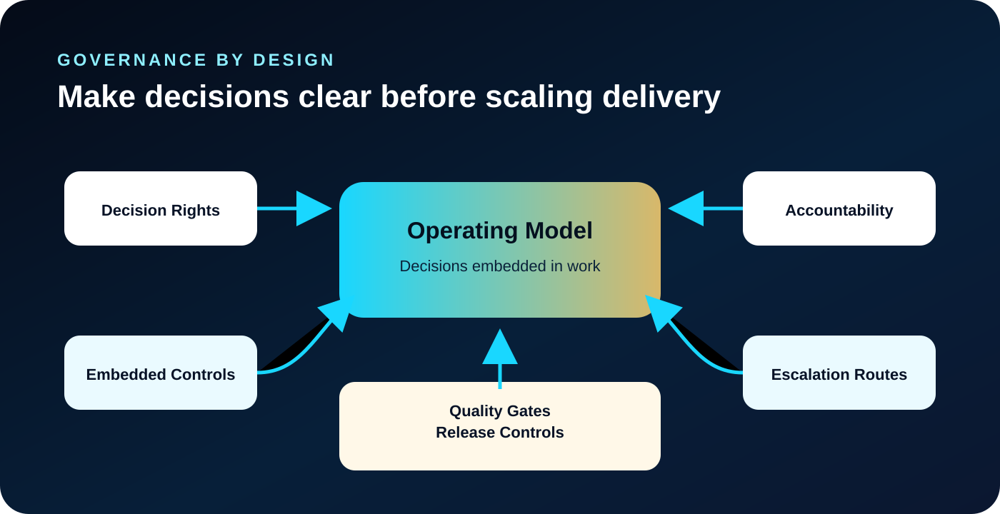
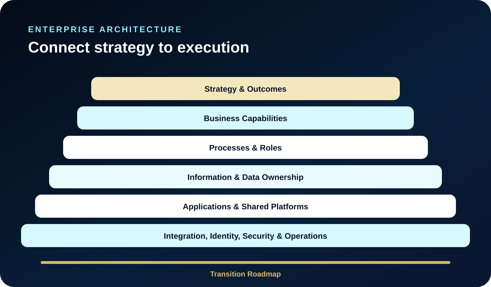
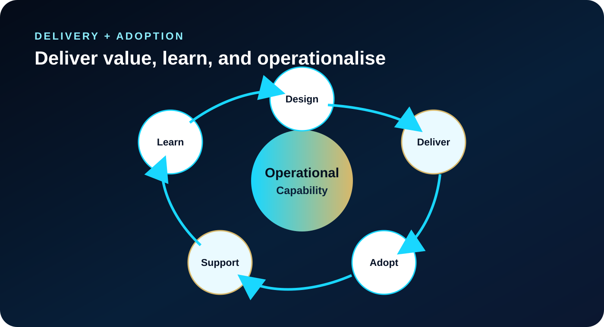
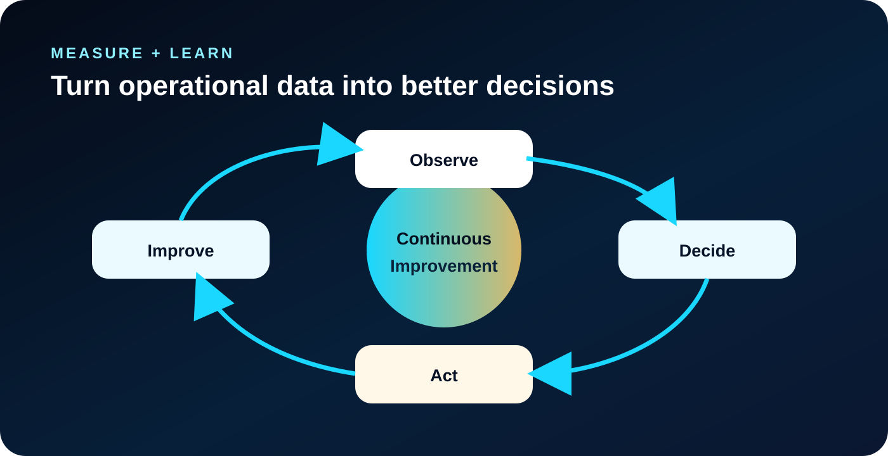

ملخص تنفيذي في 60 ثانية
ما الذي ينبغي أن تستخلصه القيادات
المشكلة
قد يُطلَق النظام بنجاح بينما يظل الأداء المؤسسي وسرعة القرار والمساءلة من دون تحسن حقيقي.
الفكرة المحورية
التحول قدرة تشغيلية تُبنى حول نتائج قابلة للقياس، وليس قائمة من المنتجات الرقمية.
نموذج القدرات
يجب أن تتكامل النتائج والحوكمة والمعمارية والبيانات والتنفيذ والتبني والقياس وأن يعزز كل منها الآخر.
الإجراء القيادي
أنشئ خط أساس بالأدلة، وحدد صلاحيات القرار، ونفّذ دفعات تنفيذية قابلة للاستخدام، وراجع القيمة باستمرار.
يمكن للتكنولوجيا أن تُرقمن إجراءً، لكن التحول المستدام يتطلب تغييرًا مترابطًا في النتائج والحوكمة والبيانات والمعمارية والتنفيذ والتبني وإدارة الأداء.
الفرق بين المشروع الرقمي والتحول الحقيقي
تصف مؤسسات كثيرة إطلاق منصة جديدة أو تطبيق للهواتف أو وحدة ضمن نظام تخطيط موارد المؤسسة أو لوحة تحليلات بأنه تحول رقمي. وقد يبدأ النظام العمل في موعده، ويتلقى المستخدمون التدريب، وتصدر التقارير. ومع ذلك تظل الموافقات بطيئة، وتستمر الفرق في الاعتماد على جداول البيانات، وتبقى البيانات محل خلاف، وتظل القرارات المهمة معتمدة على المتابعة اليدوية.
في هذه الحالة قد يكون المشروع التقني قد نجح، لكن المؤسسة نفسها لم تتحول.
لا يُقاس التحول بعدد الأنظمة التي تم تشغيلها، بل بمدى تحسن قدرة المؤسسة على اتخاذ القرار، وتنفيذ العمليات بصورة متسقة، وإدارة المخاطر، وخدمة أصحاب المصلحة، والتكيف عند تغير الظروف. التكنولوجيا عامل تمكين أساسي، لكنها ليست سوى جزء واحد من القدرة المؤسسية المطلوب بناؤها.

١. ابدأ بالنتائج لا بالأنظمة
لا ينبغي أن يكون السؤال الأول: «أي منصة نشتري؟» بل: «ما الذي يجب أن يتحسن بصورة قابلة للقياس؟»
تكون نتيجة التحول مفيدة عندما تكون محددة بما يكفي لتوجيه القرارات. وقد تتمثل في تقليص دورة تقديم خدمة، أو تحسين قابلية التتبع، أو رفع موثوقية البيانات، أو تعزيز الامتثال، أو خفض المخاطر التشغيلية، أو تمكين القيادات من رؤية الاستثناءات في وقت مبكر. وبعد وضوح النتيجة تستطيع المؤسسة تحديد العمليات والأدوار والمعلومات والضوابط والقدرات التقنية اللازمة لتحقيقها.
يحمي هذا النهج الذي يبدأ بالنتائج البرنامج أيضًا من تراكم الخصائص غير الضرورية. فيجب تقييم كل خاصية مقترحة على أساس القيمة المتوقع أن تحققها. أما القدرات التي لا تدعم النتائج المستهدفة بصورة جوهرية فيمكن تأجيلها أو تبسيطها أو حذفها.
يجب أن تكون خريطة طريق التحول خريطةً للقيمة، لا فهرسًا لخصائص البرمجيات.

٢. أنشئ خط أساس قائمًا على الأدلة
غالبًا ما تبدأ برامج التحول بافتراضات عن الوضع الحالي. وقد يعتقد القادة أن بطء العملية سببه تقادم النظام، بينما تكون الأسباب الحقيقية هي غموض الملكية، أو تكرار الموافقات، أو ضعف البيانات الرئيسية، أو عدم اتساق التعريفات، أو قصور إدارة الاستثناءات.
يجمع خط الأساس الموثوق بين ملاحظة العمليات، ومقابلات أصحاب المصلحة، وحصر الأنظمة، ومؤشرات الخدمة، وتحليل جودة البيانات، ومراجعة الضوابط، وملاحظات المستخدمين، والمتطلبات التنظيمية أو السياسات. والهدف ليس مجرد توثيق المشكلات، بل التمييز بين الأعراض والأسباب الجذرية وتحديد مواضع التدخل التي تحقق أكبر قيمة.
ينبغي أن يكون خط الأساس موجزًا بما يكفي لدعم القرار. وعادةً ما توفر مجموعة محدودة من المحاور رؤية أوضح، مثل أداء الخدمة، والحوكمة، ونضج العمليات، وجودة البيانات، والمعمارية، والأمن، وقدرات القوى العاملة، والاعتماد على الموردين، والاستدامة المالية.
تمنع الأدلة المؤسسات من أتمتة المشكلة الخطأ.

٣. صمّم الحوكمة قبل التوسع
تفشل البرامج الرقمية الكبيرة عندما تظل المسؤوليات ضمنية. ويتطلب التنفيذ المستدام حقوق قرار واضحة: من يملك نتيجة الأعمال، ومن يملك البيانات، ومن يعتمد المعمارية، ومن يقبل المخاطر، ومن يصرّح بالإصدارات، ومن يتحمل مسؤولية التبني والأداء التشغيلي.
يجب أن تجعل الحوكمة اتخاذ القرار أسرع، لا أن تضيف بيروقراطية جديدة. فالملكية الواضحة، ومسارات التصعيد، ومبادئ المعمارية، ومعايير البيانات، وبوابات الجودة، وضوابط الإصدارات تقلل الجدل المتكرر وتحمي الفرق من تضارب الأولويات.
تكون الحوكمة أكثر فاعلية عندما تكون جزءًا من نموذج التشغيل. فينبغي أن تنعكس الموافقات وحدود الوصول ومتطلبات الإثبات ومعالجة الاستثناءات والمساءلة داخل مسارات العمل والممارسات الإدارية، بدلًا من تطبيقها فقط بعد ظهور المشكلات.
الحوكمة ليست هيكلًا من اللجان، بل نظام عملي لاتخاذ القرارات وإنفاذها.

٤. استخدم معمارية المؤسسة لربط الاستراتيجية بالتنفيذ
تُعامل معمارية المؤسسة أحيانًا باعتبارها مجموعة من الرسومات التقنية، لكن قيمتها الحقيقية أوسع من ذلك؛ فهي تترجم التوجه الاستراتيجي إلى رؤية مترابطة للقدرات والعمليات والمعلومات والتطبيقات والتكاملات والضوابط الأمنية وأولويات الانتقال.
توضح المعمارية المستهدفة القوية ما يجب أن يكون مشتركًا على مستوى المؤسسة، وما يمكن أن يظل محليًا، وكيف تتحرك البيانات، وأين تقع الملكية، وكيف تتم إدارة الهويات والصلاحيات، وكيف ستُحدّث الأنظمة القديمة أو تُحال إلى التقاعد.
يجب التعامل مع التكامل باعتباره قدرة مؤسسية، لا سلسلة من الوصلات المنفصلة بين كل نظام وآخر. فواجهات البرمجة، وعقود البيانات، والبيانات الرئيسية، والمراقبة، وقابلية التدقيق، ومعالجة الاستثناءات، والتحكم في الإصدارات كلها أجزاء من نموذج التشغيل. ومن دونها يزيد كل مشروع جديد التعقيد على المدى الطويل.
تخلق المعمارية اللغة المشتركة التي تُبقي المشروعات المتعددة متجهة نحو حالة مستهدفة واحدة.

٥. نفّذ زيادات مرحلية منضبطة وقابلة للاستخدام
لا يلزم تنفيذ التحول الكبير في إصدار واحد ضخم. بل ينبغي تقسيمه إلى زيادات مرحلية تحقق قيمة تشغيلية ملموسة مع الحفاظ على سلامة المعمارية المستهدفة.
يجب أن تكون لكل دفعة تنفيذية نتائج أعمال محددة، ومعايير قبول، ومتطلبات للبيانات والضوابط، واحتياجات تدريب، وترتيبات دعم، ومالك تشغيلي مسؤول. وبهذا يرتبط التنفيذ الرشيق بالمساءلة المؤسسية.
لا تكون التجارب الأولية مفيدة إلا عندما تُصمم لاختبار الافتراضات. فينبغي أن تنتج أدلة عن ملاءمة العملية، وجودة البيانات، وسلوك المستخدمين، وحجم طلبات الدعم، وأداء التكامل، والآثار المرتبطة بالسياسات. كما يجب إدماج الدروس رسميًا في المرحلة التالية بدلًا من بقائها ملاحظات غير موثقة.
نفّذ بحجم صغير يكفي للتعلم، واحكم بقوة تكفي لمنع التجزؤ.
٦. تعامل مع التبني باعتباره تصميمًا تشغيليًا
التدريب مهم، لكنه لا يحقق التبني بمفرده. يتبنى الناس طريقة العمل الجديدة عندما تكون الأدوار واضحة، والإجراءات عملية، وأحمال العمل واقعية، والدعم سريع الاستجابة، والمديرون يعززون السلوكيات المتوقعة.
لذلك يشمل التبني تصميم الأدوار، وملكية العمليات، وأدلة العمل، وجاهزية مكتب الخدمة، وقواعد المعرفة، وشبكات المستخدمين المتقدمين، والتواصل، وحلقات الملاحظات، والرعاية القيادية الواضحة. ويحتاج المستخدمون إلى فهم كيفية استخدام النظام، وكذلك سبب تغير العملية وكيف تؤثر قراراتهم في المؤسسة ككل.
ينبغي أن تسهم ملاحظات المستخدمين في تحسين الحل من دون إضعاف التوحيد القياسي. وتتيح آلية محكومة للتغذية الراجعة للفرق التمييز بين العوائق التشغيلية الحقيقية وبين التفضيلات التي قد تعيد التجزؤ المحلي.
التبني هو النقطة التي تتحول عندها القدرة التقنية إلى قدرة مؤسسية.

٧. قِس القيمة وتعلّم باستمرار
يجب قياس المنافع طوال فترة البرنامج، لا عند الإغلاق فقط. وقد تشمل المؤشرات المفيدة نتائج الخدمة، وزمن الدورة، وجودة البيانات، والامتثال، والاستخدام الفعلي، وموثوقية المنصة، وحجم الاستثناءات، وطلبات الدعم، والأثر المالي.
ينبغي ربط المؤشرات بالحوكمة. فالقيادات تحتاج إلى عملية دورية لمراجعة النتائج، وحل العوائق المشتركة بين الإدارات، وتعديل الأولويات، واعتماد الإجراءات التصحيحية. أما لوحة المعلومات التي لا ترتبط بآلية دورية لاتخاذ القرار فهي مجرد منتج تقريري.
تستخدم المؤسسة الناضجة البيئة الرقمية للتعلم. فينبغي للبيانات التشغيلية أن تكشف مواضع تعثر العمليات، واحتياجات المستخدمين إلى الدعم، والضوابط المفرطة أو غير الكافية، والافتراضات التي تحتاج إلى مراجعة. وتتمثل القيمة طويلة الأجل للتحول في القدرة على الملاحظة واتخاذ القرار والعمل والتحسين بكفاءة أكبر.
المنتج النهائي للتحول ليس منصة، بل قدرة أقوى على التعلم والتحسين.

اختبار قيادي مبسط
قبل اعتماد المبادرة الرقمية التالية، يمكن لفرق القيادة أن تطرح سبعة أسئلة:
- ما النتيجة القابلة للقياس التي ستتحسن، ولصالح مَن؟
- ما الأدلة التي تفسر المشكلة الحالية وأسبابها الجذرية؟
- مَن يملك النتيجة والعملية والبيانات والمخاطر والخدمة؟
- هل تقلل المعمارية المستهدفة التجزؤ، أم تضيف نظامًا آخر فقط؟
- هل تستطيع كل دفعة تنفيذية أن تحقق قيمة وتنتج تعلّمًا؟
- هل الأدوار والدعم والإجراءات والممارسات الإدارية جاهزة للتبني؟
- كيف ستُقاس المنافع وتُراجع وتُستخدم لتعديل البرنامج؟
رؤية ختامية
تجمع أقوى برامج التحول بين الطموح والواقعية المؤسسية. فهي تحدد حالة مستهدفة واضحة، وتستثمر كذلك في الحوكمة، وانضباط البيانات، والمعمارية، وتنمية القدرات، والملكية التشغيلية، والتعلم المستمر.
هذا هو الفرق بين تنفيذ مشروع رقمي وبناء قدرة مؤسسية. الأول ينتج نظامًا، أما الثاني فينشئ مؤسسة قادرة على الأداء والتكيف والتحسن بعد وقت طويل من انتهاء عمل فريق التنفيذ.
الأدلة وقراءات إضافية
أطر مرجعية موثوقة تدعم هذا الطرح